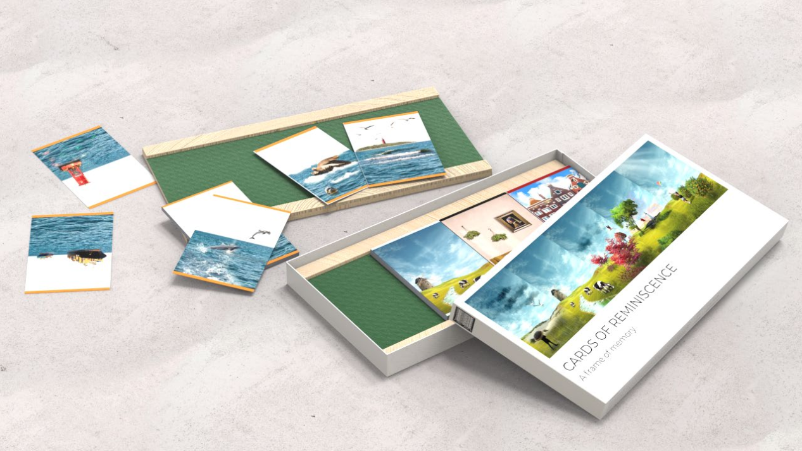
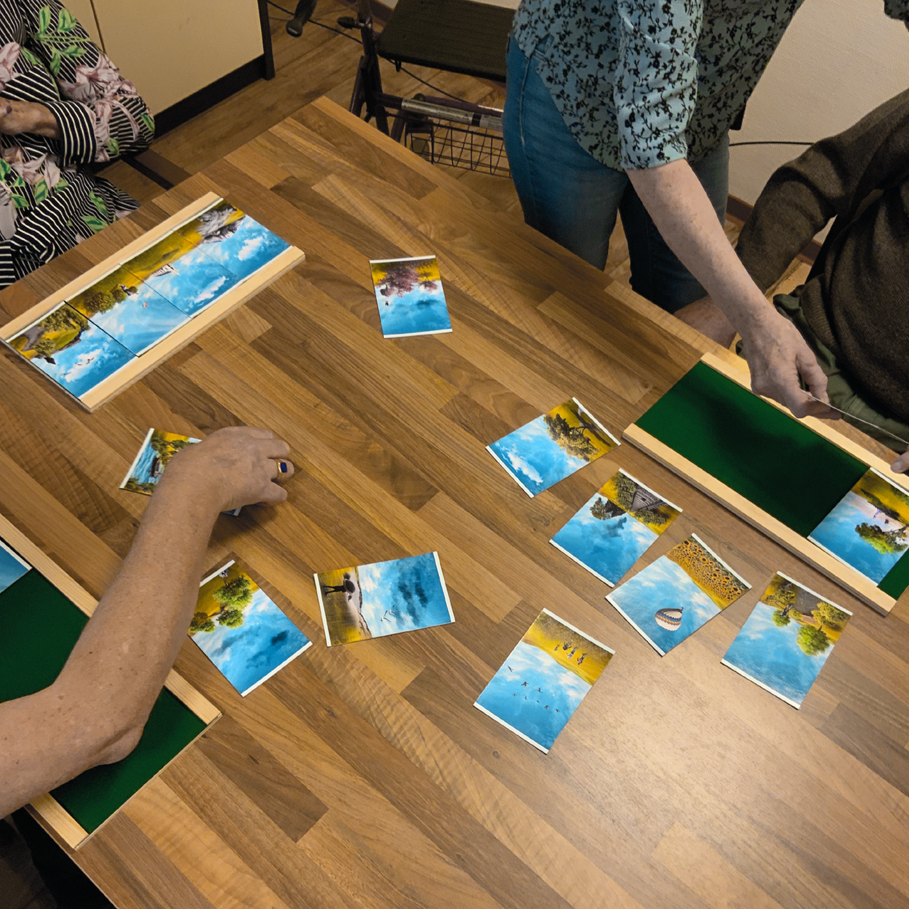
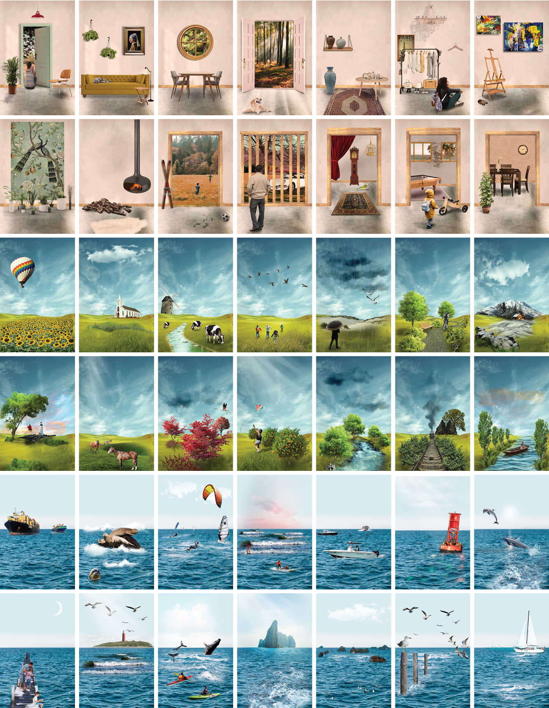
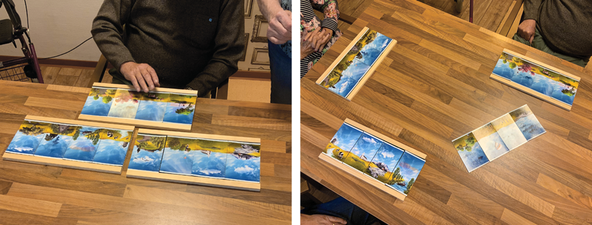
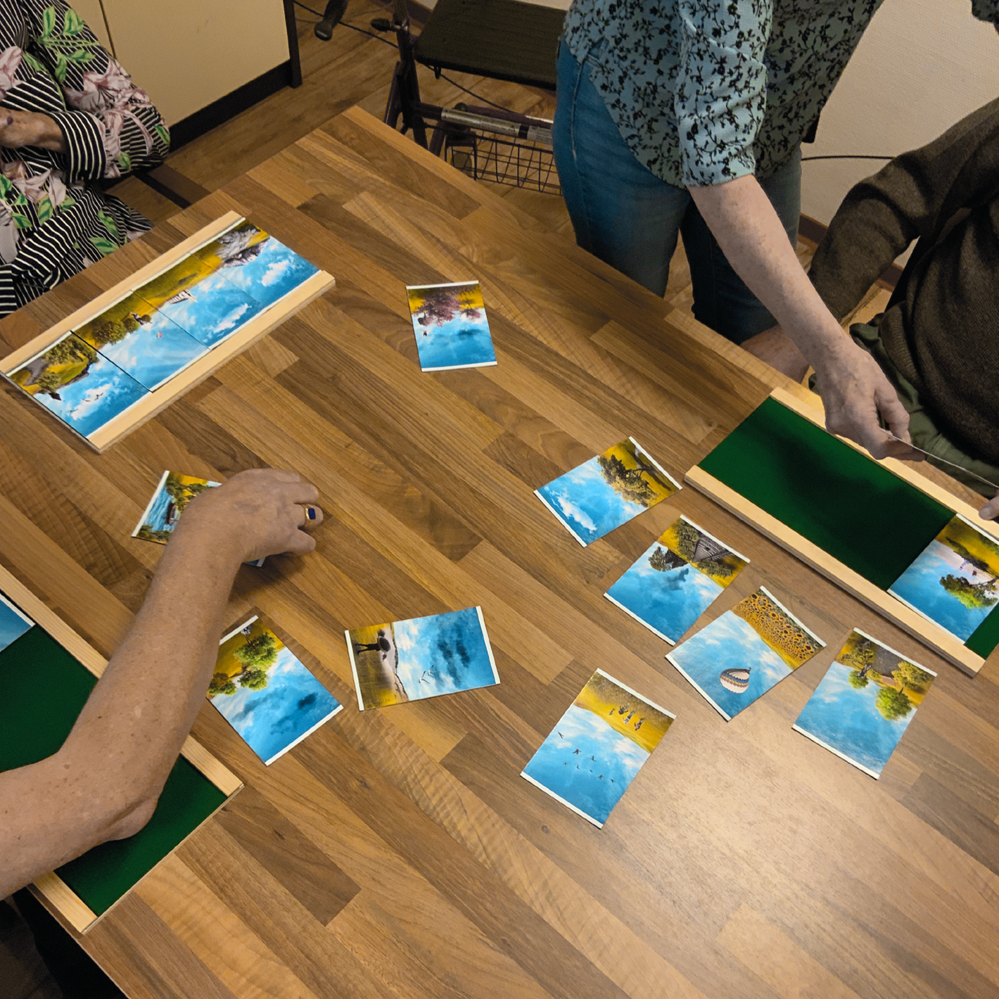
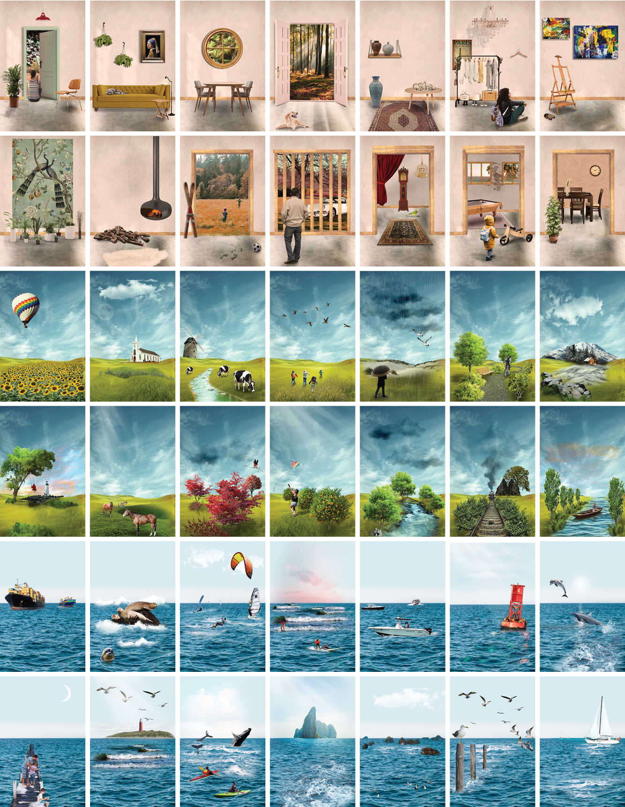
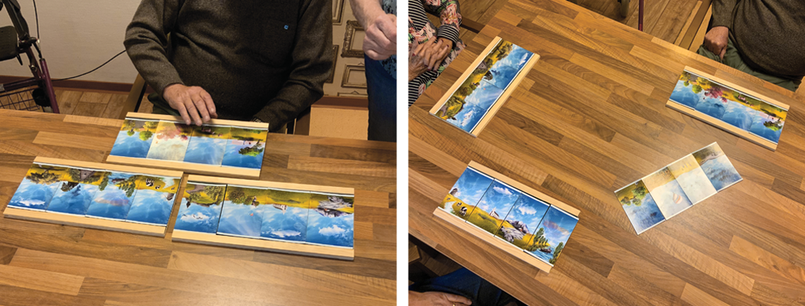
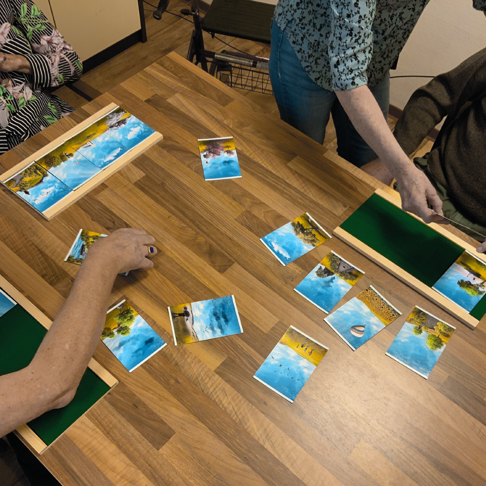
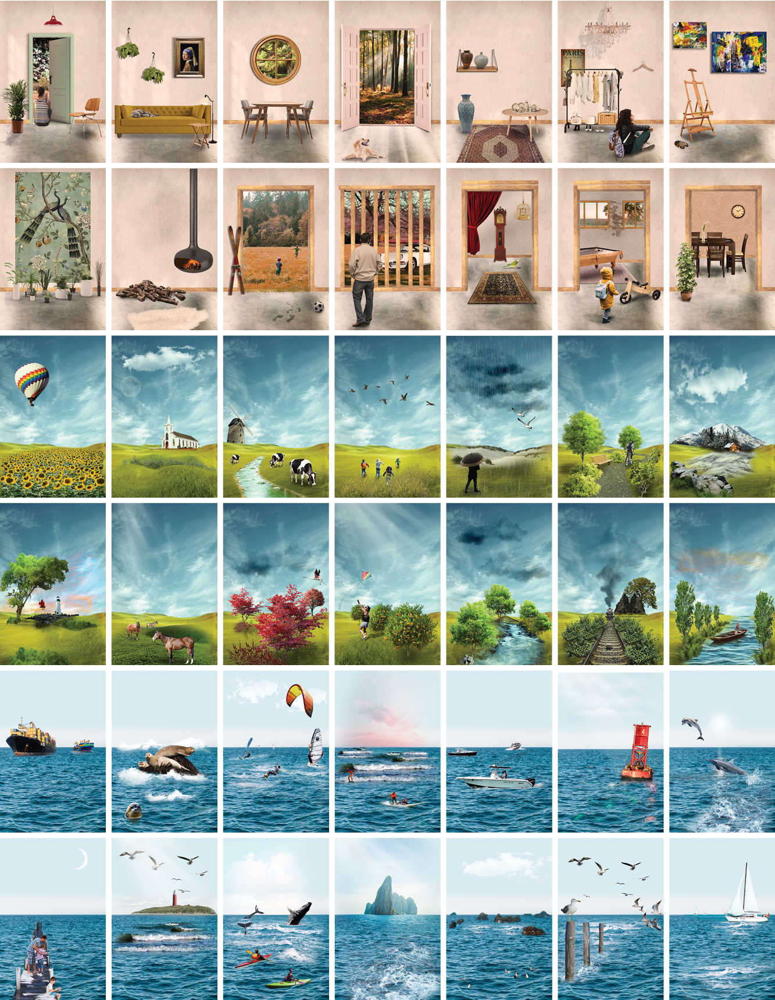
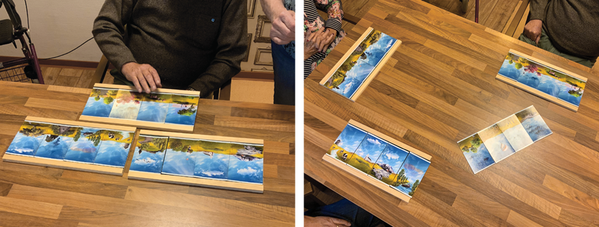

 








Related literature
Astell, A. J., Ellis, M. P., Alm, N., Dye, R., & Gowans, G. (2010). Stimulating people with dementia to reminisce using personal and generic photographs. International Journal of Computers in Healthcare, 1(2), 177. https://doi.org/10.1504/ijcih.2010.037461
Astell, A. J., Ellis, M. P., Alm, N., Dye, R., & Gowans, G. (2010). Stimulating people with dementia to reminisce using personal and generic photographs. International Journal of Computers in Healthcare, 1(2), 177. https://doi.org/10.1504/ijcih.2010.037461
Astell, A. J., Ellis, M. P., Alm, N., Dye, R., & Gowans, G. (2010). Stimulating people with dementia to reminisce using personal and generic photographs. International Journal of Computers in Healthcare, 1(2), 177. https://doi.org/10.1504/ijcih.2010.037461
Astell, A. J., Ellis, M. P., Alm, N., Dye, R., & Gowans, G. (2010). Stimulating people with dementia to reminisce using personal and generic photographs. International Journal of Computers in Healthcare, 1(2), 177. https://doi.org/10.1504/ijcih.2010.037461
cards of reminiscence
tu/e design project | 2021
Recontextualizing the Myriorama art concept into a social card activity that stimulates reminiscence, creativity, and social engagement among people with dementia.
Reminiscence, the act of recalling past experiences, can have a positive effect on cognition and mood among people with dementia. Cards of Reminiscence is a card activity that stimulates creativity and social engagement through reminiscence among people with dementia and their peers.
The design of Cards of Reminiscence is based on the concept of Myriorama, a set of illustrations that can be arranged in any order to form a cohesive artwork. Participants build their own artwork out of the panels, like a puzzle without a wrong solution. The activity is played in a group setting, where the artworks and associated stories can be shared with each other, with a caregiver present to guide the activity along and assist where needed.
The visuals themselves are designed to be associative and to trigger memories that are worth sharing, aiding in experiencing positive interactions and engagement with others. The activity triggers reminiscence and stimulates conversation; the cards provide an accessible, social, and creative activity for people with dementia.
Check out the follow-up research project here
In collaboration with Rutger Hooftman
keywords: design for dementia, interaction design, reminiscence, myriorama